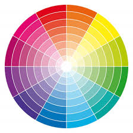

Sessão Inicial
Nome: Neemias Daniel Barreto Gaona
Harmonia Cromática: Monocromática
Paleta de Cores (Hexadecimal):
- Azul Escuro: #1B2A38
- Azul Médio: #5E6F80
- Azul Claro: #3588DD
- Branco: #F9FAFB
O que é o Círculo Cromático?
O círculo cromático é uma representação visual das cores organizadas de forma sequencial. Ele ajuda a entender as relações entre as cores e como combiná-las harmoniosamente.
Harmonias Cromáticas
As principais harmonias cromáticas são:
- Monocromática
- Análoga
- Complementar
- Triádica
- Tetrádica
- Complementar Dividida
Como Escolher as Cores do Site?
Ao definir a paleta de cores, é importante escolher tons adequados para cada elemento:
- Cabeçalhos: Cor mais escura para destacar.
- Texto principal: Cor clara para boa legibilidade.
- Bordas e botões: Cinza médio para contrastar sem exagero.
- Links: Um tom diferente, mantendo harmonia.
Ferramentas para Escolher Paletas
- Coolors: paletas personalizadas
- Adobe Color: paletas automaticamente
- Paletton: simulações detalhadas de combinações de cores
- ColourLovers: criar paletas e testar combinações de cores
- HTML Color Codes: inteligência artificial para gerar paletas
- Material Design Colors: criar paletas seguindo as diretrizes do Material Design do Google